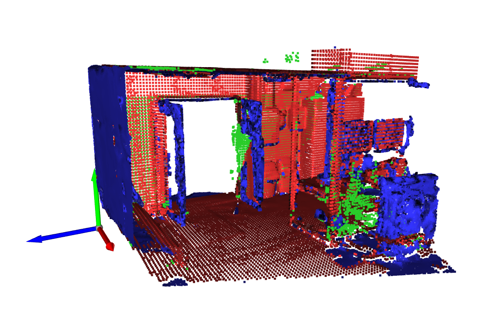
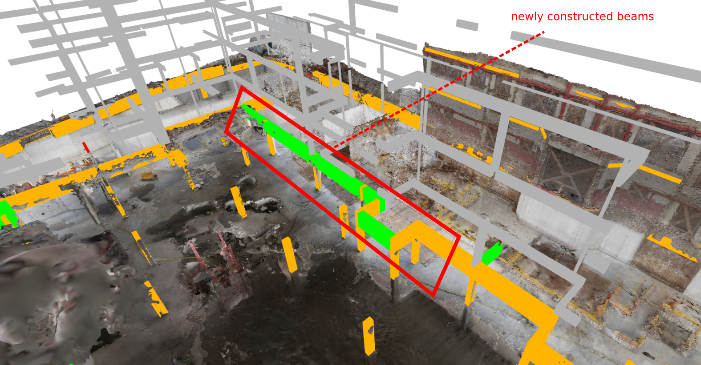
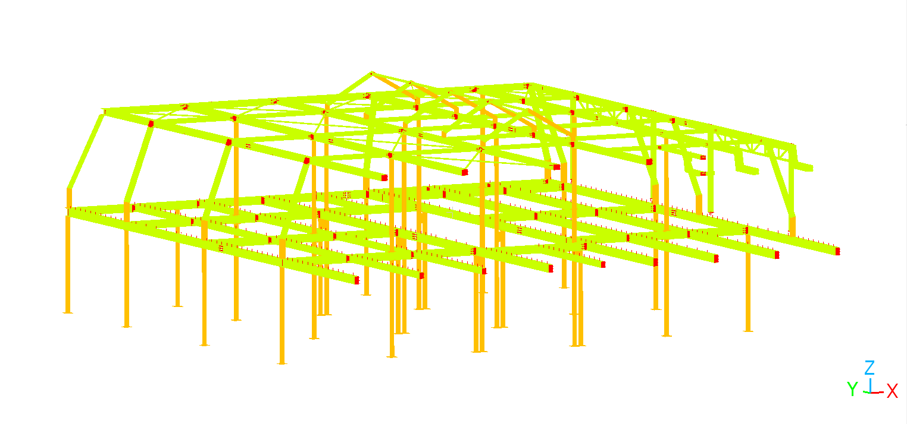

Introduction
Everything you need to know to get started with geomapi
What is Geomapi?
Python package to better organise and manage your data.
Why use Geomapi?
Standardise data storage
Improve collaboration
Use provided utilities & tools
How to use Geomapi?
Simply add it to your python project:
> pip install geomapi
import geomapi
Data Management
How to manage the data
RDF Data Storage
Remote sensing data is very large and slow
Use metadata, stored next to the resources in a standard format
.ttl
<file:///IMG_7257> a v4d:ImageNode;
v4d:name "IMG_7257";
v4d:path "IMG\\IMG_7257.JPG";
exif:imageHeight 3744;
exif:imageWidth 5616;
Creating Data
Creating nodes from resources
image = cv2.read("IMG_7257.JPG")
myImageNode = ImageNode(resource = image)
You can also use: name, path,…
Reading Data
Read the
.ttlfile as ageomapi.nodes.SessionNode()
session = SessionNode(graphPath = "file.ttl")
Cool Tools
Alignment Tools
Align 2 different datasets
Different space, time & sensor
Combination Tools
Combine 2 different datasets
Only change the updated parts

Progress Tools
detect changes throughout time

Validation Tools
Validate the BIM model using remote sensing data

Make your own tools
Use the core framework to base your code on
Easy code sharing
Conclusion
Use Geomapi to:
Standardise your data storage
Use a variety of utils and tools to speed up your workflow
Build upon a great foundation for better collaboration
Full documentation
https://geomatics.pages.gitlab.kuleuven.be/research-projects/geomapi/